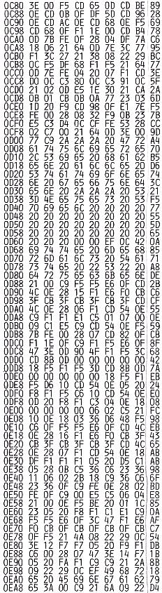

Nascom Journal |
Dezember 1981 · Ausgabe 11/12 |
In einem Feld von 14x14 Feldern sind vier Raumstationen versteckt. Die Aufgabe des Spielers besteht nun darin, diese Raumstationen zu finden. Damit bei der Suche der Erfolg nicht ganz und gar dem Komissar „Zufall“ überlassen sein soll, hilft der Computer ein wenig. Nach der Eingabe der Koordinaten vom Spieler errechnet er, wieviele Funksprüche er von diesem Punkt aus von den Raumstationen über die Senkrechte Horizontale und Diagonale empfangen kann. Den errechneten Wert zeigt er dann an dem vom Spieler eingegebenen Punkt an. (übrigens: das rotierende kleine Quadrat im großen Quadrat soll den sich drehenden Radarspiegel darstellen.) Fehler bei der Eingabe können durch BS verbessert werden, Findet man nun eine der Raumstationen, so druckt der Computer an der betreffenden Stelle das Klingelzeichen als Symbol für die gefundene Station. Im oberen rechten Bildrand wird die Anzahl der Züge angezeigt; somit steht einem Wettkampf in der Familie oder unter Freunden nichts mehr im Wege. Wurden alle vier Stationen gefunden, so gratuliert der Computer dem Spieler in Form einer Laufschrift.
Sinn des Spiels ist es, das logische sowie kombinatorische Denken zu fördern.
Das Programm läuft unter NAS-SYS und wurde so konzipiert, daß es auch auf der Minimalkonfiguration des Nascom läuft, damit jeder etwas davon hat.
Und hier noch einige Unterprogramme und deren Funktionen für den Teil der Leser, die Programme disassemblieren und auf ihre Funktion hin untersuchen.
1.CD 65 0D : gibt den Text„Bitte mehrmals Taste „S“druecken.“aus.
2.CD BE 0E : ruft den Zufallsgenerator auf.
3.CD 0B 0F : erzeugt Spielfeld.
4.CD 96 0E : schreibt „Ihre Eingabe“.
5.CD AC 0E : holt Eingabe
6.CD 68 0E : berechnet Cursorposition im Spielfeld.
7.CD 68 0F : erzeugt rotierendes Quadrat.
CD 98 0F : Time Delay
CD A3 0F : setzt Cursor um eine Stelle zurück
CD A9 0F : bringt A zur Anzeige, setzt Cursor zurück, ruft Time Delay auf
CD 82 0F : Trefferanzeige
8.CD B4 0D : berechnet Treffer;A=0F Volltreffer, sonst A=Trefferanzahl
9.CD D0 0C : erzeugt Laufschrift.
| Seite 24 von 55 |
|---|